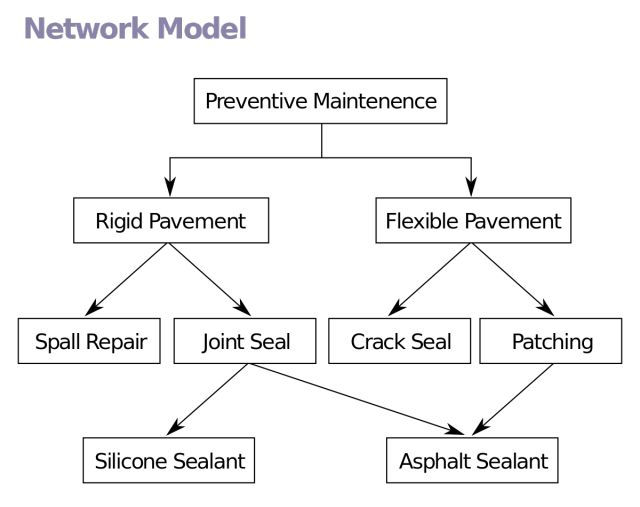
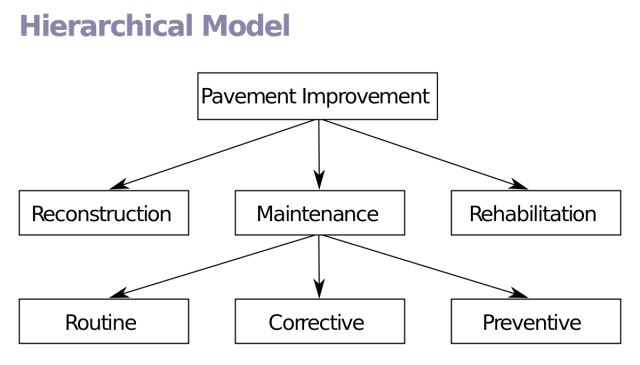
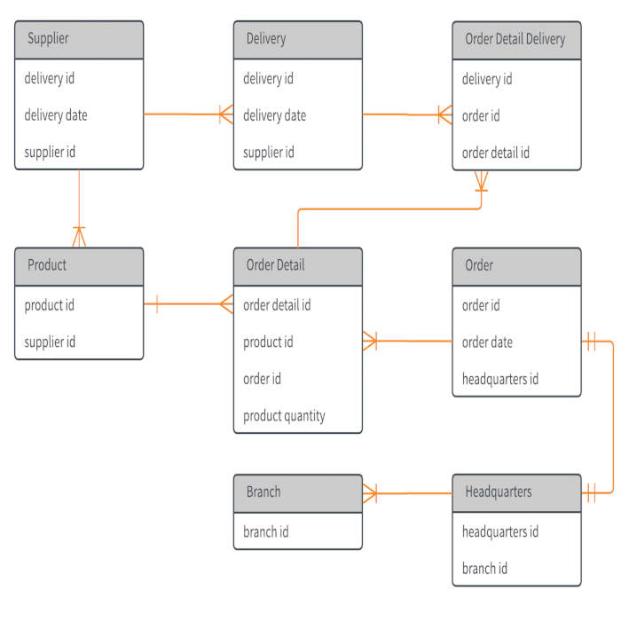

数据库介绍
数据库是“按照数据结构来组织、存储和管理数据的仓库”，是一个长期存储在计算机内的、有组织的、可共享的、统一管理的大量数据的集合。 简单来说，就是一个用来存储数据的仓库。当今世界是一个充满着数据的互联网世界，充斥着大量的数据。即这个互联网世界就是数据世界。数据的来源有很多，比如出行记录、消费记录、浏览的网页、发送的消息等等。除了文本类型的数据，图像、音乐、声音都是数据。
数据库用来存储体量庞大的数据，为了更高效的存储和查询这些数据，这些数据必须要按照一定的规则来存放。数据库管理系统就是为管理数据库而设计的软件系统，一般具有存储、截取、安全保障、备份等基础功能。市场上比较流行的数据库管理系统产品主要是Oracle、IBM、Microsoft和Sybase、Mysql等公司的产品。
数据库的发展历史
在关系型数据库出现之前，主要是网状数据库（Network Databases）和层次数据库（Hierarchical Databases）。最早出现的是网状DBMS，是美国通用电气公司Bachman等人在1961年开发成功的IDS（Integrated DataStore），网状数据库模型对于层次和非层次结构的事物都能比较自然的模拟，当时网状DBMS要比层次DBMS用得更普遍。在数据库发展史上，网状数据库占有重要地位。

层次型数据库紧随网络型数据库出现。最著名最典型的层次数据库系统是IBM公司在1968年开发的IMS（Information Management System），一种适合其主机的层次数据库。这是IBM公司研制的最早的大型数据库系统程序。

1970 年，IBM研究员E.F.Codd博士在刊物Communication of the ACM上发表了一篇名为“A Relational Modelof Data for Large Shared Data Banks”的论文，提出了关系模型的概念，奠定了关系模型的理论基础。

1970年关系模型建立之后，IBM公司在San Jose实验室增加了更多的研究人员研究这个项目，这个项目就是著名的System R，目标是论证一个全功能关系DBMS的可行性。（该项目结束于1979年，完成了第一个实现SQL的DBMS）。
1973年加州大学伯克利分校的Michael Stonebraker 和EugeneWong利用System R已发布的信息开始开发自己的关系数据库系统Ingres（ORACLE数据库的雏形）。
由于当时IBM实验室的体制（IBM的研究人员大多是学术出身，他们最感兴趣的是理论和学术成果，而非推向市场的产品），以及当时IBM对IMS的承诺，IBM并不是第一个发布商用关系型数据库的公司。第一个商用关系型数据库是由霍尼韦尔公司在1976年发布Multics Relational Dat a Store（非SQL标准语句）。
1978年 Ellison (埃里森) 在为中央情报局做一个数据项目时，仔细阅读了 codd 发表的“R系统:数据库关系理论”，这个论文主要介绍了关系数据库理论和查询语言SQL。Ellison 看完后，敏锐意识到在这个研究基础上可以开发商用软件系统。而当时大多数人认为关系数据库不会有商业价值。而就在几个月后，Oracle 1.0 诞生了，Oracle 这个名字也来源于他们曾给中央情报局做过的项目名。
直到1985年IBM才发布了关系数据库 DB2，那时 oracle 已经占有了很大的市场，Ellison 已经成了千万富翁。1989年，微软发布了 SQL Server 1.0 版。三大商用关系型数据库的发布年份，也正好对应了市场占有率的排名。